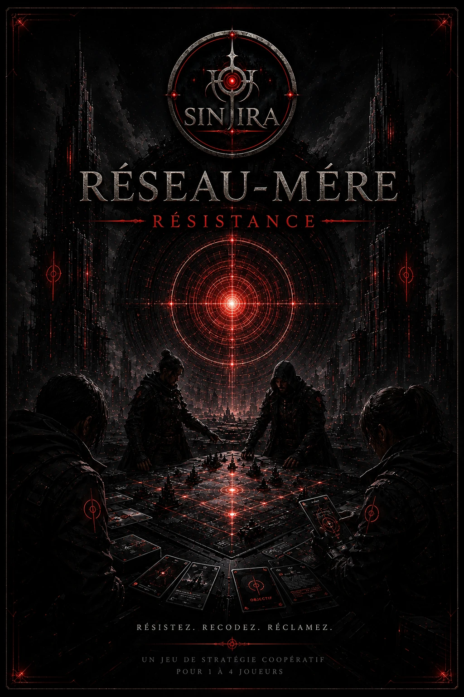

01
Projet de jeu confirmé
SINJIRA
Fracture du Réseau-Mère
Le premier jeu de la section, avec son icône officielle dédiée.
Cette section regroupe les deux jeux confirmés de SINJIRA. Le second projet change officiellement de nom et devient Réseau-Mère : Résistance.
SINJIRA
Le premier jeu de la section, avec son icône officielle dédiée.

SINJIRA
Le projet anciennement nommé Le Premier Refuge est maintenant présenté sous son nouveau nom officiel.